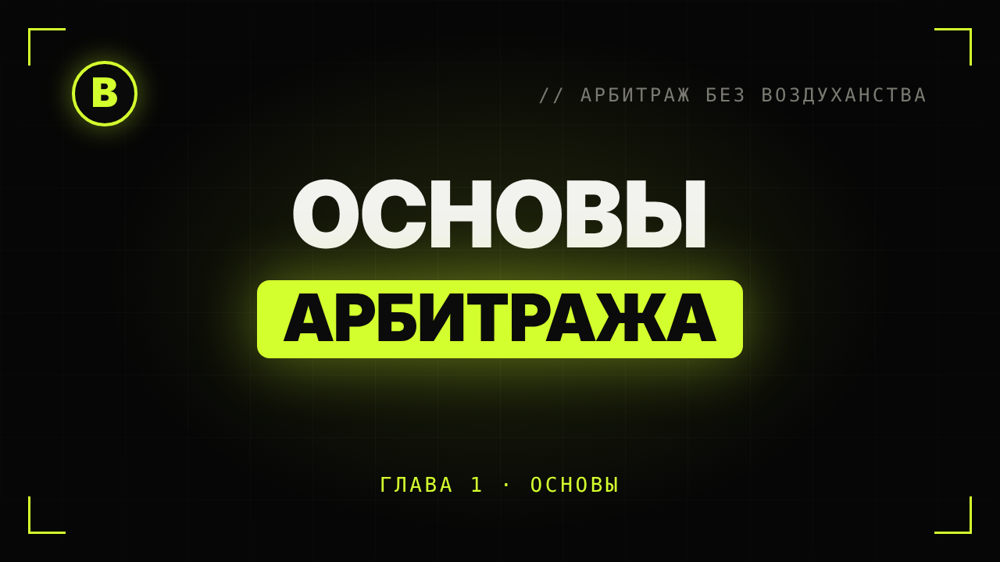

Основы

Цепочка арбитража
Ты — посредник между трафиком и партнёрской программой. С одной стороны источник трафика, с другой партнёрка и оффер: ты покупаешь или получаешь трафик и направляешь его на оффер, а партнёрка платит за действия людей.
Если термины незнакомы
CPC — цена за клик. CPA — выплата за целевое действие (в нашем случае за депозит). CPL — цена за лид. CR — конверсия в процентах. Инсталл — установка приложения, рега — регистрация, деп — первый депозит.
Базовые термины (CPC, CPA, cost per lead и так далее) вы должны знать сами, их я разбирать не буду. Расскажу о том, что вам почти не объяснят: как выбирать ГЕО и из чего складывается цена.
ГЕО: тиры
Страны делятся на три группы:
- Тир 3 — бедные страны. Цена за депозит всегда низкая.
- Тир 2 — менее бедные страны. Цена за депозит средняя.
- Тир 1 — богатые страны с хорошими зарплатами и платёжеспособной аудиторией. Цена за депозит самая высокая.
Весь курс я буду разбирать на примере Бельгии (тир 1).
Из чего складывается цена
В Бельгии CPA в основном $250 за депозит. От этой цифры считаются остальные цены на пути пользователя:
| Этап | Доля от CPA | Цена (CPA $250) |
|---|---|---|
| Клик | 2% | $5 |
| Инсталл | 10% | $25 |
| Регистрация | 20% | $50 |
| Депозит | — | $250 (указывает партнёрка) |
Это работает, если у тебя CR 20%. Цену депозита назначает сама партнёрка.
Click to inst, inst to reg, reg to dep
Это конверсии между этапами, то есть процент людей, которые дошли до следующего шага:
- click to inst — из клика в установку;
- inst to reg — из установки в регистрацию;
- reg to dep — из регистрации в депозит.
Глубже: что это значит в цифрах
Если считать по таблице выше, получается примерно так: из клика в установку проходит около 20% ($5 → $25), из установки в регистрацию около 50% ($25 → $50), из регистрации в депозит около 20% ($50 → $250). Это расчёт «по средней», в реальности цифры будут отличаться по связке и источнику.
Сначала изучи ГЕО
Прежде чем работать с любым ГЕО, его нужно тщательно изучить:
- какая там валюта;
- какая ОС преобладает: Android или iOS;
- все местные тонкости;
- свежие новости, на которых можно сыграть и сделать подход.
ГЕО нужно «проспаить» (изучить через спай-сервисы). В основном это делается в Ads Library и Tyver.
Spy — это всего лишь набор идей, которые ты должен сложить в свой уникальный подход, а не копировать. Спай — это мусорка, где хранится абсолютно всё, но в ней можно найти что-то годное.
Пример подхода: DICE-игры
На примере Бельгии возьмём подход DICE game. Он там очень распространён: это игры с кубиками. Провайдеры специально делают такие версии под Бельгию. Например, Pragmatic сделал Gates of Olympus Dice, Sweet Bonanza Dice и подобные.
Новые главы выходят в канале. Подпишись, чтобы не пропустить.
Подписаться на «Воздухан»